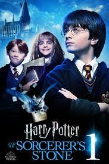

Harry potter and the Sorcerer's stone
Harry Potter and the Philosopher's Stone is a fantasy novel written by British author J. K. Rowling. The first novel in the Harry Potter series and Rowling's debut novel, it follows Harry Potter, a young wizard who discovers his magical heritage on his eleventh birthday, when he receives a letter of acceptance to Hogwarts School of Witchcraft and Wizardry. Harry makes close friends and a few enemies during his first year at the school and with the help of his friends, Ron Weasley and Hermione Granger, he faces an attempted comeback by the dark wizard Lord Voldemort, who killed Harry's parents, but failed to kill Harry when he was just 15 months old. The book was first published in the United Kingdom on 26 June 1997 by Bloomsbury. It was published in the United States the following year by Scholastic Corporation under the title Harry Potter and the Sorcerer's Stone. It won most of the British book awards that were judged by children and other awards in the US. The book reached the top of the New York Times list of best-selling fiction in August 1999 and stayed near the top of that list for much of 1999 and 2000. It has been translated into at least 73 other languages and has been made into a feature-length film of the same name, as have all six of its sequels. The novel has sold in excess of 120 million copies, making it the third best-selling book of all time.[1][2] Most reviews were very favourable, commenting on Rowling's imagination, humour, simple, direct style and clever plot construction, although a few complained that the final chapters seemed rushed. The writing has been compared to that of Jane Austen, one of Rowling's favourite authors; Roald Dahl, whose works dominated children's stories before the appearance of Harry Potter; and the ancient Greek story-teller Homer. While some commentators thought the book looked backwards to Victorian and Edwardian boarding school stories, others thought it placed the genre firmly in the modern world by featuring contemporary ethical and social issues, as well as overcoming obstacles like bullies. The Harry Potter series has been used as a source of object lessons in educational techniques, sociological analysis and marketing.